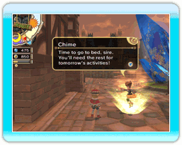

12
|
Je dag als Koning |
 |
Het doel van dit spel is gebouwen te bouwen en de wensen van je inwoners te vervullen om een groot koninkrijk weder op te bouwen. Natuurlijk kan je elke dag vrij beslissen waar je je op wilt concentreren.
Elke dag gebeurt in ware tijd, zoals de klok in de linkerhoek bovenaan het scherm vermelt. De dag loopt af bij zonsondergang, wanneer Chime de koning zegt dat het bedtijd is.  ● 's Morgens
● 's Morgens's Ochtends zal Chime een verslag van de vorige dag voorstellen. Lees het zorvuldig om tips te vinden over de behoeften van je koninkrijk en om je dag dienovereenkomstig te plannen. Op dat ogenblik kan je ook opdrachten geven, die op het mededelingenbord zullen komen te staan. Je avonturiers zullen dan naar de kerkers te gaan. |
 ● Overdag
● OverdagEr is veel te doen als je uit het kasteel gaat, zoals de avonturier selecteren die je opdracht zal uitvoeren, gebouwen optrekken en met burgers babbelen. Deze praatjes bevatte soms nuttige informatie over wat moet worden gedaan. Luister dus aandachtig naar het volk! Het is ook leuk om de gangen van elke burger na te gaan want ze weerspiegelen zijn behoeften en wensen. |

● Zonsondergang
Zodra het donker wordt, komt Chime om je te zeggen dat het tijd is om naar bed te gaan. De dag is dus afgelopen. Als je wilt, mag je ook vroeger naar bed gaan. Naargelang je koninkrijk bloeiend wordt en je burgers en hun families gelukkiger worden, zal je langer buiten mogen blijven. |
 |
 |
 |